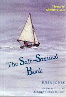
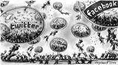
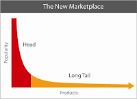
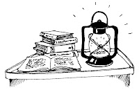

The kindest of all the publishers who turned down The Salt-Stained Book sent me an email when I told her I’d decided to publish it myself. “I predict it will become a cult classic,” she said. I’d been deeply disappointed by her final refusal of the book. We liked each other personally and she’d expended time and trouble thinking about the book and offering suggestions. In the end, however, she had decided that she had to separate herself as an individual from herself as the CEO of a large and successful international publishing company. The Salt-Stained Book just didn’t fit the way they worked. “I can’t tell you how I wish we could have published it,” her message finished.
To be honest I wasn’t that grateful. The bit about the “cult classic” sounded patronising and if she’d really wanted to publish the book, I couldn’t exactly see what was stopping her.
Ewan Morrison is an author / journalist who is making a good living prophesying gloom. He has been on an End of the Book reading tour since last summer and his latest call to repentance was published in the Guardian last month and directed at us, the self e-publishers. In fact, I currently sell more copies of The Salt-Stained Book on paper than on line but, as far as Morrison and his admirers are concerned, all of us indies are beyond the pale. Andrew Franklin of Profile Books claims to turn away from self-published authors if he finds himself sitting next to them at dinner. “Free is far too much to pay for the overwhelming majority of books self-published,” he announced at last year’s London Book Fair. “If you self-publish on the internet, you might as well not bother. You will be silent.” As silent as we would all be if we waited for Franklin and his ilk to condescend to take on our books.
There is such arrogance and rudeness here. What other groups of workers or even hobbyists is it socially acceptable to dismiss or ridicule wholesale? And when Morrison writes about doom which awaits “the self e-publishing bubble”, agents and publishers twitter approvingly and paste links on Facebook with complacent schadenfreude. Our doom is nigh apparently.
“After a long year of trying to sell self-epublished books, attempting to self-promote on all available networking sites, and realising that they have been in competition with hundreds of thousands of newcomers just like them, the vast majority of the newly self-epublishe

d authors discover that they have sold less than 100 books each. They then discover that this was in fact the business model of Amazon and other epub platforms in the first place: a model called "the long tail". With five million new self-publishing authors selling 100 books each, Amazon has shifted 500m units. While each author – since they had to cut costs to 99p – has made only £99 after a year's work." Muggins!But is that so? I went to the blog page of Wired whose editor-in-chief, Chris Anderson was the first to articulate the theory of The Long Tail. “The theory of the Long Tail is that our culture and economy is increasingly shifting away from a focus on a relatively small number of "hits" (mainstream products and markets) at the head of the demand curve and toward a huge number of niches in the tail. As the costs of production and distribution fall, especially online, there is now less need to lump products and consumers into one-size-fits-all containers. In an era without the constraints of physical shelf space and other bottlenecks of distribution, narrowly-targeted goods and services can be as economically attractive as mainstream fare.”

He gives a graph: “The vertical axis is sales; the horizontal is products. The red part of the curve is the hits, which have dominated our markets and culture for most of the last century. The orange part is the non-hits, or niches, which is where the new growth is coming from now and in the future.”
What we self-publishers are doing is difficult but it’s neither vain nor silly. We are trying to connect with readers who are discovering a vastly extended range of choices, just as they have in the music and video industries. They are finding a new freedom. “As they wander further from the beaten path, they discover their taste is not as mainstream as they thought – or as they had been led to believe by marketing, a lack of alternatives, and a hit-driven culture.”
I think it was Jan Needle who described The Salt-Stained Book as “a weird one” or maybe it was a reviewer on Amazon. Or both. They’re right of course and finally I think I’ve understood with that well-meaning publisher was trying to say. Perhaps some books cope better than others with the sell-or-pulp culture of instant exposure that corporate marketing offers, before it moves relentlessly onwards to the next new product in its hungry search

for hits. If an independently published and individually marketed book finds its niche then perhaps there will be the time for it to grow slowly. I'm still not comfortable with the word cult but a niche that gradually gets populated could reasonably hope to grow into ... a teeny, tiny ... hit?